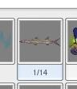
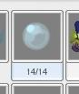
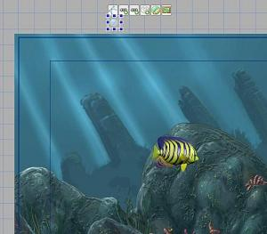
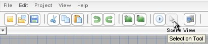
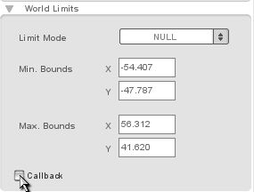
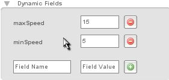
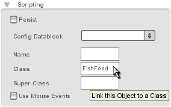
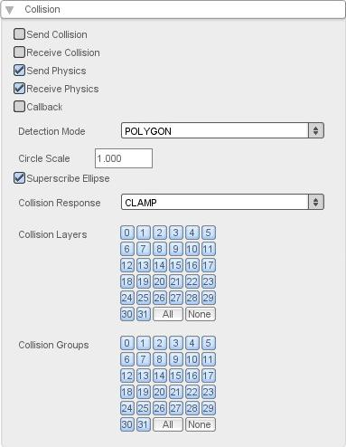
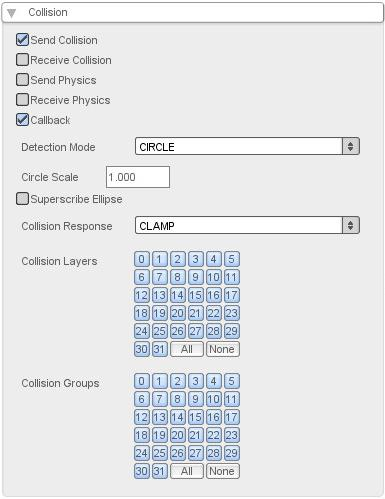
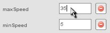

Figure 5.1.4

Figure 5.1.5

Figure 5.1.6
Torque 2D - Fish Game Tutorial - Part 5
5. Adding Game Play
We are at a good stage to implement some basic game play aspects. First, we will add falling food to the level, so we can move our fish to gather the food. Later we can add obstacles, but first we need to get the food spawning and gathering working.
Browse out to your MyFishGame/gameScripts folder. This time we aren't going to open player.cs yet; we are going to create a new script file. Create a new text file and name it "fishfood.cs." Now that we have created the script file, we need to make sure it gets included when we run T2D. We did this with player.cs. It works the same here. Open up game.cs in the same gameScripts folder. You should see a function called startGame(). If you remember, we added the "exec("./player.cs");" script line. We now need to add another one for our fishfood.cs. So make the function look like this.
function startGame(%level)
{
exec("./player.cs");
exec("./fishfood.cs");
Canvas.setContent(mainScreenGui);
Canvas.setCursor(DefaultCursor);
new ActionMap(moveMap);
moveMap.push();
$enableDirectInput = true;
activateDirectInput();
enableJoystick();
sceneWindow2D.loadLevel(%level);
}
Code Sample 5.1.1
Be sure to save the game.cs script file, and then you can close it. Now that the "fishfood.cs" script will be executed, let's flesh it out. Let's script a new class to handle our fish food. Start by adding this onLevelLoaded function.
function FishFood::onLevelLoaded(%this, %scenegraph)
{
%this.startPosition = %this.getPosition();
%this.setLinearVelocityY(getRandom(%this.minSpeed, %this.maxSpeed));
}
Code Sample 5.1.2
This onLevelLoaded function is actually pretty simple. We just store the start position on the object and then set its linear velocity in the Y direction. We get a random number between its minSpeed and maxSpeed. We will need to specify those as Dynamic Fields in the Level Builder.
Add this next function to your fishfood.cs.
function FishFood::onWorldLimit(%this, %mode, %limit)
{
if(%limit $= "bottom")
{
%this.spawn();
}
}
Code Sample 5.1.3
This function is optionally called when the object has reached its world limit. In the case of our food, we want to set the response to "NULL" and then set this callback to be called when the world limit has been reached. It passes three values back. First, it passes %this, which is the instance of the class. It then passes %mode, which is the mode of the world limit. Finally, it passes %limit, which designates the side of the world limit that has been hit (top, bottom, left, or right).
So we simply compare %limit to "bottom" (note we use "$=" instead of "==" because this is a string compare operation). If it is indeed the bottom we're hitting, then we call a spawn function.
So now lets add the spawn function.
function FishFood::spawn(%this)
{
%this.setPosition(%this.startPosition);
%this.setLinearVelocityY(getRandom(%this.minSpeed, %this.maxSpeed));
}
Code Sample 5.1.4
|
 |
 |
 |
We're not quite finished with the
bubble. Let's do a couple of more things. The next thing, is to set the world
limit. Hover over the bubble and select the World Limit option from the
quick menu (as shown in Figure 5.1.4). When you click the World Limit
tool it should zoom out in an area around the bubble (as shown in Figure 5.1.5).
Drag it and resize it around the level (as shown in Figure 5.1.6).
|
|
|
|
|
|
Now that the world limit is encompassing just beyond the level, click the Selection Tool to apply the world limit (as shown Figure 5.1.8).
With the world limit applied, we now need to set the world limit settings. Ensure that the bubble is selected and click the Edit tab. From here, you should be able to find the World Limits area. If you click it, the World Limit options should open up. Click the dropdown and change the world limit mode to "NULL". Also be sure to check the Callback checkbox (as shown in Figure 5.1.9).
Figure 5.1.8

Figure 5.1.9

Figure 5.1.10
Our final step is to link in the class. Do this the same way we originally did the fish. Change the class of the bubble to "FishFood" (as shown in Figure 5.1.11).

Figure 5.1.11
Now that we have implemented our
falling fish food, we can add game play utilizing it. We will have our fish
collect the food, and then have the food respawn. To do this, we have to
utilize some collision aspects of T2D - including setting it up
properly in the Level Builder. Our first step, is to enable collision on
both our food and our fish, as well as setting up a proper collision polygon.
A collision poly is the outline on an object that T2D registers as the
boundary for a collision. Once this boundary touches the boundary of another
object, it will have had a "collision".
We will start with our bubble, so left
click to select it. Now go to the Collision properties panel. Click Edit
on the right panel. Then click on the Collision label to expand your
collision options (as shown in Figure 5.2.1). Right now we aren't
currently sending or receiving any collisions. For the moment, we will only
need our bubble to collide with our fish; though we may want to add different
responses to different objects later. Therefore, it is best to handle the
collision response on our bubble, and then filter it depending on what it
collides with, since it's possible that it can collide with many things. In
this case, we just need to check Send Collision, since we will be
sending collision requests.
We don't want our bubble to respond with any
physics, though. We want to handle the entire response in script, so uncheck
both the Send Physics and the Receive Physics options. We are
almost done; the next option is Callback. This decides whether or not we
get a script callback when our objects collide. We definitely want this, so
check Callback to enable it. Finally, our last configuration is the Detection
Mode dropdown. Click the drop down and change it to "CIRCLE." This mode
provides a default circle collision detection mode, that will work perfectly
for our round bubble. You should see two more options below "Detection Mode".
One is a Circle Scale value, the other is a Superscribe Ellipse
checkbox. We want to uncheck Superscribe Ellipse, since this will create
our circle collision around our object, rather than within the object. Now we
are done with our bubble's collision settings (as shown in Figure 5.2.2).

Figure 5.2.1

Figure 5.2.2
Next we need to set our fish's collision settings. Our fish will be nearly the same, though a few things will need to be configured a bit differently - mainly the collision detection mode. Since our fish isn't round, CIRCLE won't work as a collision detection mode. We will need to create a custom poly, which is a very easy step in the Level Builder.

Figure 5.2.3

Figure 5.2.4
Now that we have the collision polygon defined, we can set the rest of the collision settings. To accept the collision poly click the Selection Tool in the top toolbar (as shown in Figure 5.2.5).
Figure 5.2.5
Your view should zoom back out to the normal Level Builder view, with your fish selected. Click the Edit tab and expand the Collision label (if it isn't already). We need to set our fish's collision properties a bit differently than our bubble's collision. We want to check both Send Collision and Receive Collision, but we need to uncheck the physics checkboxes, since we don't need any physics response. Right now we don't need a collision callback, so we can leave that alone as well. We can also leave the Detection Mode as "POLYGON", since we specified a custom poly already. We're finished with the Level Builder, and can handle the rest of our fish-eating-food implementation in script.
Browse to your MyFishGame/gameScripts folder and open up your fishfood.cs script file. We have set up all the collision settings properly, including a callback to be processed. We now need to create the function that will receive that callback when collision occurs. Add this function to the end of your fishfood.cs file.
function FishFood::onCollision(%srcObj, %dstObj, %srcRef, %dstRef, %time, %normal,
%contactCount, %contacts)
{
}
Code Sample 5.2.1
When our fish food collides with an object it will call this function, passing back all sorts of useful information. The only information we care about right now is the %dstObj. This is what the food is colliding with. So we will put in a check to make sure that this object is indeed our player fish, and then make the food spawn again so it looks like the fish is eating the food. To do this, make your onCollision function look like this.
function FishFood::onCollision(%srcObj, %dstObj, %srcRef, %dstRef, %time, %normal,
%contactCount, %contacts)
{
if(%dstObj.class $= "PlayerFish")
{
%srcObj.spawn();
}
}
Code Sample 5.2.2
Now when our fish food collides with
our fish, it should respawn the food so we can gather it again. Lets try it
out. Open up T2D and hit the play button in the Level Builder.
You should be able to move your fish into the food, and it should respawn up at
the top! If you're bubble isn't respawning, be sure to double check that
you have set both the bubble and the fish collision settings
properly.
Now that we have our food falling and our fish can collect it, let's add a bit more game play. Let's make our food spawn at a random X position above the level, and let's increase the max random speed to give us a bit more of a challenge.
To do this we need to dig into our fishfood.cs file again. Switch out your onLevelLoaded function with this function.
function FishFood::onLevelLoaded(%this, %scenegraph)
{
%this.startPositionY = %this.getPositionY();
%this.setLinearVelocityY(getRandom(%this.minSpeed, %this.maxSpeed));
}
Code Sample 5.3.1
The only change we made was to swap out "%this.startPosition = %this.getPosition();". We changed it to store just the Y position, since we will randomly generate the X position. Now lets change the spawn function a bit.
function FishFood::spawn(%this)
{
%this.setPosition(getRandom(-50, 50), %this.startPositionY);
%this.setLinearVelocityY(getRandom(%this.minSpeed, %this.maxSpeed));
}
Code Sample 5.3.2
We simply changed the setPosition call a bit. We set the X position based on a random number between -50 and 50 (you can double check in your Level Builder to make sure those extents are right) and then set its Y position based on the one stored when we load.
To increase the falling speed, we can just modify the Dynamic Field in the Level Builder. So be sure to save this script file and load up T2D. Select your food bubble and then click the Edit tab in the right panel. Scroll down and expand Dynamic Fields (as shown in Figure 5.3.1). Change the maxSpeed value to "35" and the minSpeed value to "5", then hit enter (as shown in Figure 5.3.2). Be sure to save off your level; and let's test it! (Press the play button to test.) The food should fall a bit faster (with the possibility of being a lot faster) and it should drop in random areas in your level!|
|
 |
|